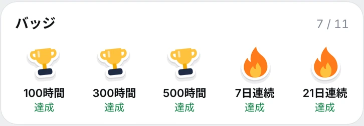
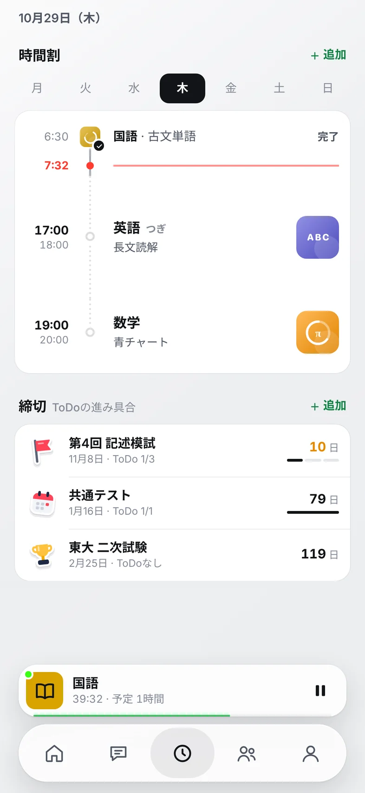
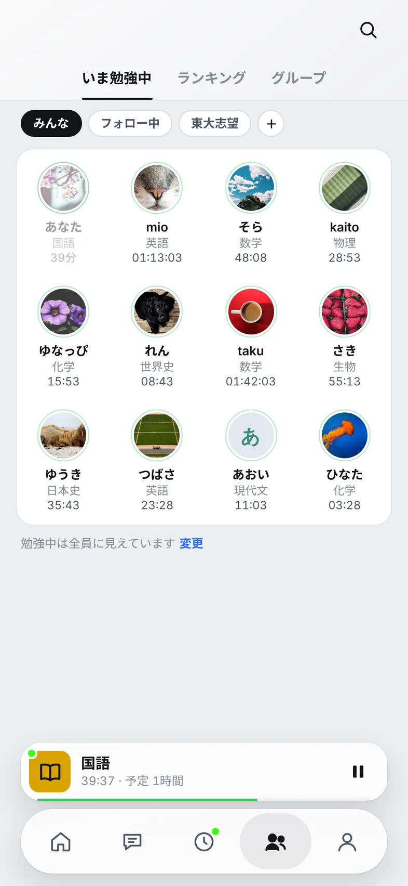
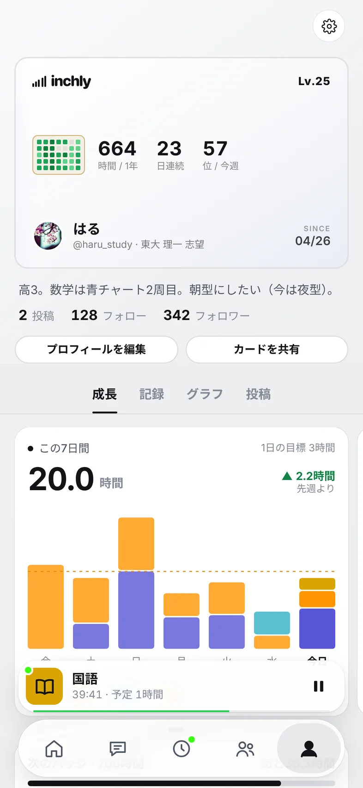
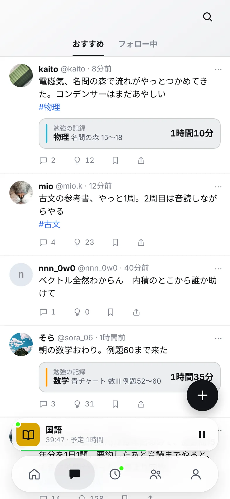

時間割
No.01 · ならべる1日の予定を、1本の線にならべる。次の予定は、画面の下のバーにいつも出る。時間が来たら、お知らせも届く。
- 予定
- 締切まであと何日
- ちょっとせっかち
次 · 17:00 英語 長文読解画面 iPhone の勉強アプリ · 近日公開
できること · 6つ
時間割、タイマー、記録、連続記録、バッジ、友だち。ひとつずつは小さいけれど、あわせると毎日が少しずつ前に進む。さわってみて。
1日の予定を、1本の線にならべる。次の予定は、画面の下のバーにいつも出る。時間が来たら、お知らせも届く。
次 · 17:00 英語 長文読解画面 00:00
押したら、もう始まっている。予定の時間をすぎても、止めるまではかる。✓ を押せば、そのまま今日の記録に。
勉強中 · 英語 39:20画面 
いま勉強中の友だちが、科目と時間といっしょに並ぶ。友だちが始めたら、「一緒に始める」をひと押し。
mio · 英語を勉強中 · 4:11画面 カードの中の名前と数字は見本です。
科目 · 12の顔
英語は吹き出し、数学はπ、化学はフラスコ。アプリでは科目に絵がつく。ここではドット絵にして、動かしてみた。カーソルを動かしたり、さわったりしてみて。
アプリの科目の絵は線画です。ここではドット絵にしています。
友だち · いま勉強中
アプリでは、いま勉強中の人が科目と時間といっしょに並ぶ。ここにいるのは、見本の小さな人たち。ならべたり、ぶらぶらさせたり、あつめたりしてみて。
がんばると · 気づく
始めると、目ざましが鳴る。記録すると、経験値がふえる。友だちが始めると、鶴が知らせる。7日続けると、券が出る。押してみて。
休み券 +1
動きは見本です。
本物の画面 · 開発中
ホーム、タイマー、時間割、友だち、マイページ、タイムライン。開発中の画面なので、名前と数字は見本です。






ふだんは明るいスタンダード。気分を変えたい夜は、ネオンの街みたいなサイバー。
開発中の画面です。名前と数字は見本です。
使い方 · 3つ
時間割に予定を入れておく。時間が来たら押す。終わったら ✓。それだけで、毎日の勉強が記録になる。
日にちと時間と科目を入れておく。次の予定は、画面の下のバーにいつも出る。
押したら、もう始まっている。止めるまで、ちゃんとはかる。
どこまでやったかを一言。書かなくても、時間はそのまま今日の記録に。
00:00
// ここに今日の記録がたまる
おうちの方へ
はじめは、勉強中（ニックネーム・科目・時間）は全員に、メッセージはグループのメンバーまで。どちらも設定で、いつでも変えられる。
| 設定 | できること | はじめは |
|---|---|---|
| 勉強中を見せる相手 | 全員／フォロワーだけ／見せない | 全員 |
| 順位を見せる | ランキングに出す／出さない（出さなくても自分の順位は見られる） | 出す |
| メッセージを受け取る相手 | フォロー中の人／グループのメンバーまで／全員 | グループのメンバーまで |
| ブロック・通報 | 名前を押すと、どこからでもできる。ブロックした人は出てこない | — |
| 13歳未満 | 保護者の同意を得ているか、はじめにたずねる | — |
| 記録の保存 | この iPhone の中に保存。圏外でも記録できる | — |
はじめに、保護者の同意を得ているかをたずねます。「保護者の同意を得ています」にチェックしないと、先へ進めません。
記録は、この iPhone の中に保存されます。勉強中の表示（ニックネーム・科目・時間）と順位は、設定で決めた範囲の人に見えます。設定から、書き出しや、アカウントとデータの削除ができます。
近日公開
iPhone 向けに、[公開日]ごろ公開する予定。値段はまだ決めていない。決まったら、このページで知らせる。
まずは iPhone から。日本語で使えます。
小学生も、中学生も、高校生も、資格の勉強をしている大人も。13歳未満の人は、保護者の同意を得てから。
値段と、広告を出すかどうかは、決まったらこのページで知らせます。
[Android版の予定]